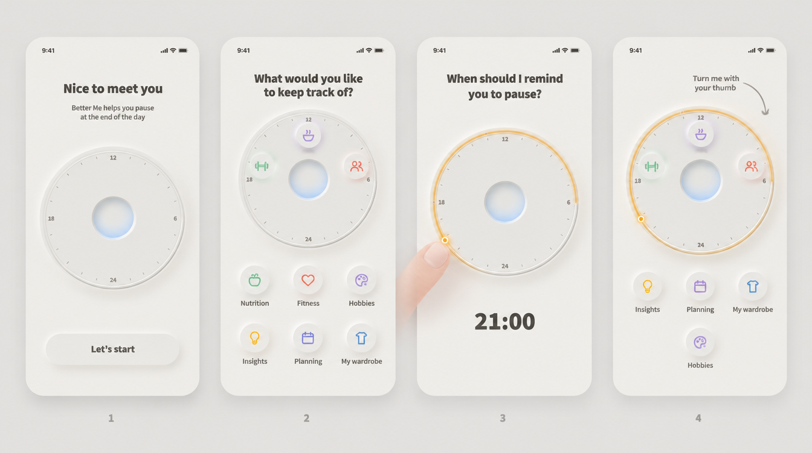
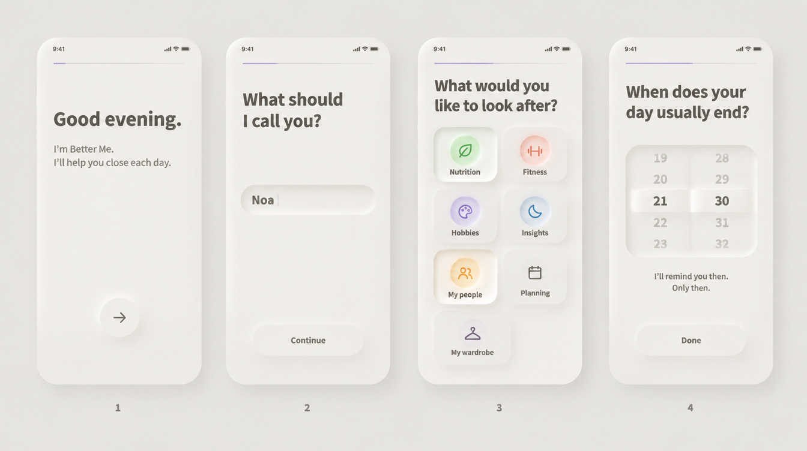
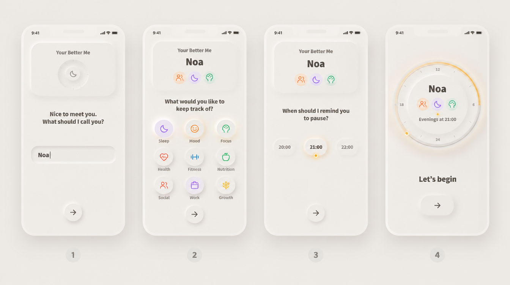

מסך הכניסה: שלושה כיוונים
בכל השלושה יש ארבעה צעדים במקום שישה: שתי השאלות על האזורים הופכות לשאלה אחת, ובסוף נוחתים במסך הראשי ולא בסיום יום. בעברית תתווסף גם שאלת "איך לפנות אלייך". אלה הדמיות באנגלית, ולכן טקסט קטן בהן לפעמים לא מדויק. ב־dev לא שיניתי כלום.

היא בונה את החוגה שלה
מהרגע הראשון רואים את החוגה, ריקה. בוחרים אזורים, והם עולים אל הטבעת ונדלקים. את שעת התזכורת קובעים בסיבוב סמן קטן על שעון החוגה עצמו. בסוף זו כבר החוגה שלה, עם רמז חד־פעמי: "סובבו אותי באגודל". ככה הכניסה גם מלמדת איך משתמשים באפליקציה.
הכי הרבה עבודה: אנימציה של אזורים שעולים לטבעת וסמן שאפשר לסובב. בהדמיה יש כמה טעויות, למשל "האנשים שלי" חסר בשורה ו"תחביבים" מופיע פעמיים. מה שחשוב בה הוא הרעיון.

כמו סיום יום: שאלה אחת גדולה בכל מסך
קו התקדמות דק למעלה, שאלה גדולה ורגועה ומרחב נקי, כמו ביומן ערב. האזורים נבחרים כאריחים שנלחצים פנימה ונדלקים מבפנים בצבע שלהם. בסוף שואלים "מתי היום שלך נגמר בדרך כלל?" עם גלגל שעה, ו"אזכיר לך אז. רק אז."
הכי קרוב לקול של האפליקציה ולסיום יום. הכי פחות מראה את המסך הראשי עצמו. בגלגל שבהדמיה מופיעות דקות לא נכונות, אבל זה רק בתמונה.

כל תשובה מוסיפה שורה לכרטיס שלה
למעלה יש כרטיס "Better Me שלך", וכל תשובה ממלאת בו עוד שורה: השם, האייקונים של האזורים, שעת התזכורת. בסוף הכרטיס הופך לחוגה של המסך הראשי. רואים בבירור שהאפליקציה נבנית בשבילה.
ההדמיה המציאה אזורים שאין לנו, כמו שינה, מצב רוח ועבודה. בבנייה אלה יהיו האזורים האמיתיים. המעבר מכרטיס לחוגה דורש אנימציה עדינה.
כדי לבחור, כתוב לי 1, 2 או 3, או שילוב, למשל "2 עם החוגה של 1 בסוף".